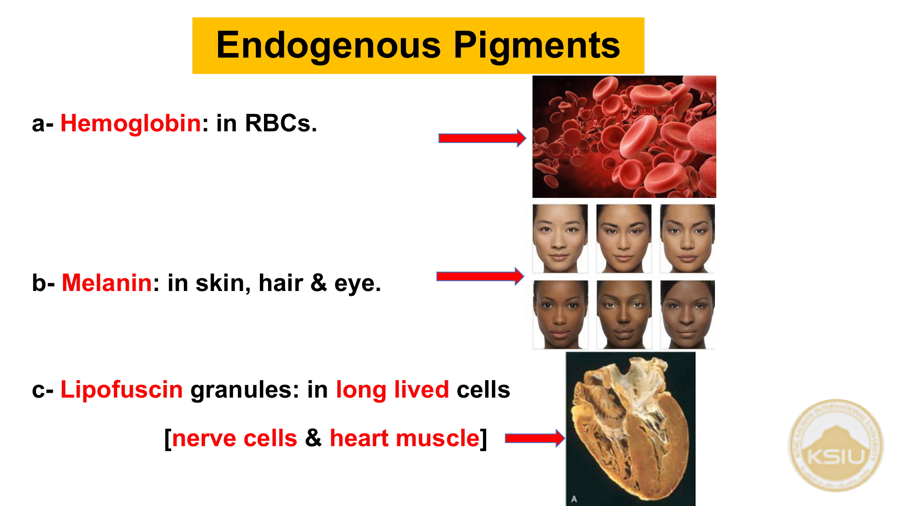
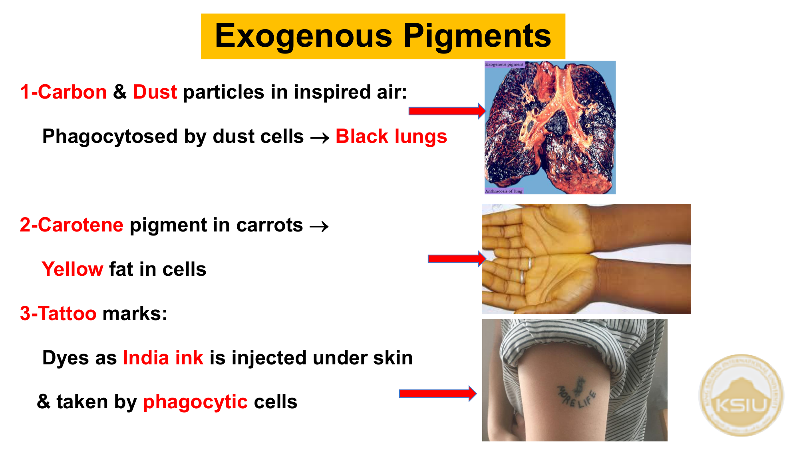
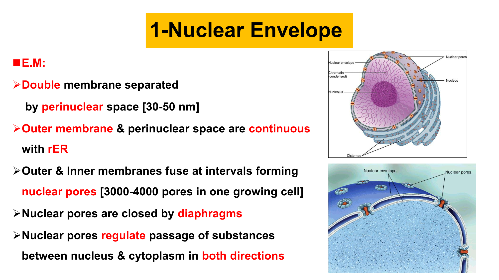
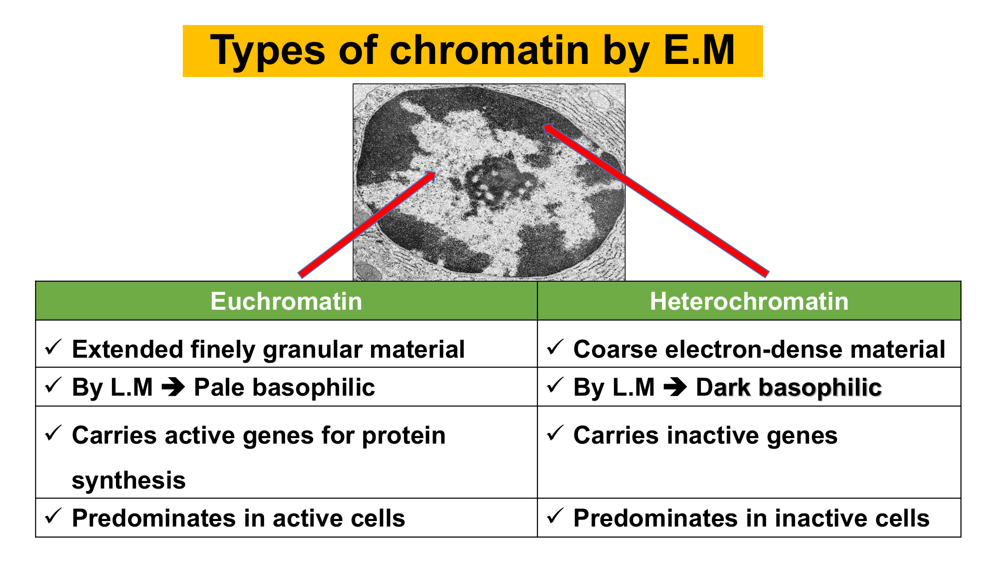

🔬 ملخص محاضرة علم الأنسجة: Cytology-II
كلية الطب - جامعة الملك سلمان الدولية | د. ثروت عبد اللطيف
1️⃣ مقدمة الخلية وتنظيم السيتوبلازم (The Cell)
تتكون الخلية The Cell (ذا سيل) من جزأين أساسيين: السيتوبلازم Cytoplasm (سيتوبلازم)، والنواة Nucleus (نيوكليَس).
ويتكون السيتوبلازم من:
- المادة الخلالية Cytoplasmic Matrix (سيتوبلازميك ماتركس).
- العضيات الخلوية Cytoplasmic Organelles (سيتوبلازميك أورجانيلز).
- المشتملات الخلوية Cytoplasmic Inclusions (سيتوبلازميك إنكلوجنز).
أنواع العضيات السيتوبلازمية:
| عضيات غشائية Membranous (ميمبرانس) | عضيات لا غشائية Non-membranous (نان-ميمبرانس) |
|---|---|
|
• Cell membrane (سيل ميمبرين) • Mitochondria (مايتوكوندريا) • Endoplasmic reticulum (rER & sER) (إندوبلازميك ريتيكيولم) • Golgi apparatus (جولجي أباراتَس) • Lysosomes (لايسوسومز) |
• Ribosomes (رايبوسومز) • هيكل الخلية Cytoskeleton (سايتوسكيليتون): أ) أنابيب دقيقة Microtubules (مايكروتيوبيولز): تشمل Centrioles (سينتريولز) و Cilia (سيليا). ب) خيوط دقيقة Filaments (فيلامنتس): رفيعة Thin، متوسطة Intermediate، وسميكة Thick. |
2️⃣ اللايسوسومات (Lysosomes - لايسوسومز)

تكوين اللايسوسومات من الشبكة الإندوبلازمية وجهاز جولجي
أ) التعريف والمنشأ:
- الوصف: الجهاز الهضمي للخلية Digestive system of the cell (دايجستيف سيستم أوف ذا سيل).
- المنشأ: تتكون بتعاون بين الشبكة الإندوبلازمية الخشنة rER وجهاز جولجي Golgi apparatus.
- المحتوى: إنزيمات هاضمة محللة Hydrolytic enzymes (هايدروليتيك إنزايمز) مثل: Phospholipases (فوسفو لايبيزيز)، Proteases (بروتييزيز)، و Nucleases (نيوكلييزيز).
- التواجد: تتواجد بوفرة هائلة في الخلايا الأكولة Phagocytic cells (فاجوسايتيك سيلز) مثل خلايا الدم البيضاء WBCs.
- بالمجهر الإلكتروني: تظهر معتمة/كثيفة إلكترونياً Electron-dense (إلكترون دينس).
ب) مرحلتا اللايسوسومات (1ry & 2ry):
- اللايسوسوم الأولي Primary [1ry] lysosome (برايمري لايسوسوم): حديث التكوين Newly formed، حويصلات صغيرة ومتجانسة Small homogenous vesicles.
- اللايسوسوم الثانوي Secondary [2ry] lysosome (سكندري لايسوسوم): ناتج عن اندماج الأولي مع جزيئات خلوية، وتكون حويصلاته غير متجانسة Heterogeneous vesicles.
ج) أنواع اللايسوسومات الثانوية:

مخطط أنواع اللايسوسومات الثانوية الأربعة ومساراتها
- Heterolysosomes (هيتيرو لايسوسومز): اندماج لايسوسوم أولي مع فجوة بلعمية تحتوي على طعام صلب أو بكتيريا (Phagocytosis (فاجوسايتوسيز)).
- Multivesicular bodies (ملتي فيسيكيولار بوديز): اندماج لايسوسوم أولي مع قطرات سائلة ممتصة بالشرب الخلوي (Pinocytosis (بينوسايتوسيز)).
- Autolysosomes (أوتو لايسوسومز): اندماج لايسوسوم أولي مع عضيات خلوية قديمة ميتة مثل ميتوكوندريا تالفة، وتسمى العملية الالتهام الذاتي (Autophagy (أوتوفاجي)).
- Residual bodies (ريزيدوال بوديز): أجسام متبقية تحتوي على مخلفات هضم غير قابلة للتحلل (Indigestible remnants) تُطرد خارج الخلية بـ Exocytosis (إكسوسايتوسيز) أو تبقى كصبغات داخلية.

1. Heterolysosome (E.M)

2. Multivesicular body (E.M)

3. Autolysosome (E.M)
د) وظائف اللايسوسومات:
- هضم العناصر الغذائية في السيتوبلازم.
- هضم الأجسام الغريبة (البكتيريا والفيروسات) كخط دفاع مناعي Immune function.
- هضم قطرات السوائل.
- التخلص من العضيات القديمة وإعادة تدويرها (Autophagy).
- التحلل الذاتي للخلية بأكملها بعد موتها المبرمج Autolysis after programmed cell-death (أوتولايسيز).
3️⃣ المشتملات الخلوية (Cell Inclusions - سيل إنكلوجنز)

مخطط تصنيف المشتملات الخلوية: طعام مخزن وصبغات
أولاً: الغذاء المخزن (Stored Food):
1. الكربوهيدرات: الجليكوجين Carbohydrates [Glycogen] (جلايكوجين):
- الموقع: الكبد Liver والعضلات Muscles.
- بالمجهر الضوئي (L.M): غير مرئي بصبغة H&E المعتادة لأنه يذوب في الماء أثناء التحضير (Water soluble). يصبغ بـ:
- Best's Carmine (بيستس كارمين): يظهر كحبيبات حمراء Red granules.
- PAS (بي إيه إس): يظهر بلون بنفسجي Purple.
- بالمجهر الإلكتروني (E.M): حبيبات كثيفة إلكترونياً، إما مفردة α Granules (ألفا جرانيولز) أو في تجمعات وردية β Granules (rosettes) (بيتا جرانيولز)، وتتركز قرب الشبكة الملساء sER.

جليكوجين الكبد بصبغة Best's Carmine (LM)

جليكوجين α و β بالمجهر الإلكتروني (EM)
2. الدهون Fats [Lipids] (ليبيدز):
- الموقع: خلايا النسيج الدهني Fat cells والكبد Liver.
- بالمجهر الضوئي (L.M): تظهر في صبغة H&E كفجوات بيضاء فارغة Empty vacuoles لأن المذيبات العضوية تذيب الدهون أثناء التحضير.
- الصبغات الخاصة:
- Sudan III (سودان ثري): فجوات برتقالية Orange vacuoles.
- Sudan Black (سودان بلاك): فجوات سوداء Black vacuoles.

مقارنة فحص الدهون: H&E (فارغة)، Sudan III (برتقالي)، Sudan Black (أسود)
ثانياً: الصبغات (Pigments - بيجمنتس):
1. صبغات داخلية Endogenous (إندوجينَس):
- Hemoglobin (هيموجلوبين): في كرات الدم الحمراء RBCs.
- Melanin (ميلانين): في الجلد والشعر والعينين.
- Lipofuscin (لايبوفيوسين): حبيبات التلف والشيخوخة في الخلايا المعمرة (الأعصاب وعضلة القلب).

2. صبغات خارجية Exogenous (إكسوجينَس):
- الكربون والغبار: تبتلعه خلايا الرئة البلعمية مسبباً الرئة السوداء Black lungs.
- Carotene (كاروتين): صبغة الجزر تذوب في دهن الخلايا فتعطيه لوناً أصفر.
- أحبار الوشم Tattoo marks: تحقن كـ India ink وتبتلعها الخلايا البلعمية تحت الجلد.

4️⃣ النواة (The Nucleus - ذا نيوكليَس)

تركيب النواة بالمجهر الإلكتروني: الغلاف، السائل، الكروماتين، والنوية
- الوصف: مركز التحكم والقيادة في الخلية The command center of the cell.
- بالمجهر الضوئي (L.M): تظهر كتركيب أزرق قاعدي Basophilic (بيزوفيليك) لاحتوائها على الأحماض النووية DNA & RNA.
المكونات الأربعة للنواة بالمجهر الإلكتروني:
-
الغلاف النووي Nuclear Envelope (نيوكليار إنفيلوب):
غشاء مزدوج تفصله مسافة Perinuclear space (بيري نيوكليار سبيس) [30-50 نانومتر]. الغشاء الخارجي متصل بالشبكة الخشنة rER. يلتحم الغشاءان لتكوين ثقوب نووية Nuclear pores مغلقة بحواجز Diaphragms تنظم عبور الجزيئات بالاتجاهين.

- السائل النووي Nucleoplasm (نيوكليوبلازم): سائل رائق متجانس يعمل كوسط ناقل Transport medium لحمل الريبوسومات و m-RNA من النواة إلى السيتوبلازم.
-
الكروماتين Chromatin (كروماتين):
المادة الوراثية المكونة من بروتين نووي Nucleoprotein يتكثف أثناء الانقسام إلى كروموسومات.

وجه المقارنة الكروماتين النشط Euchromatin (يوكروماتين) الكروماتين المكثف Heterochromatin (هيتيروكروماتين) المجهر الإلكتروني (E.M) مادة ممتدة محببة بدقة (Finely granular) كتل خشنة كثيفة داكنة (Coarse electron-dense) المجهر الضوئي (L.M) شاحب الزرقة (Pale basophilic) داكن الزرقة (Dark basophilic) حالة الجينات جينات نشطة لتصنيع البروتين (Active genes) جينات خاملة غير مفعلة (Inactive genes) نوع الخلايا يسود في الخلايا عالية النشاط يسود في الخلايا غير النشطة / الخاملة -
النوية Nucleolus (نيوكليولَس):
كتلة داكنة الصبغ (Dark basophilic)، تصنع r-RNA (الرنا الريبوسومي).
⚠️ تنبيه للامتحان: يتم تصنيع أجزاء الرنا في النوية، لكن تجميعها النهائي مع البروتينات لتكوين الريبوسومات يحدث في السيتوبلازم وليس داخل النوية!
وظائف النواة (Functions of the Nucleus):
- التحكم في جميع وظائف الخلية وتصنيع البروتين.
- حفظ المعلومات الوراثية (DNA).
- تصنيع أنواع الرنا الثلاثة (mRNA, tRNA, rRNA).
- التحكم في انقسام وتكاثر الخلية.
5️⃣ دليل مراجعة شرائح العملي (Practical Slides Revision)
| المجهر / الصبغة | المظهر والتشخيص النموذجي (Identification) |
|---|---|
| E.M | EM of Heterolysosome: حويصلة غير متجانسة محتوية على مواد صلبة/بكتيريا مبلعمة. |
| E.M | EM of Multivesicular body: حويصلة تحوي بداخلها كرات صغيرة ممتلئة بسوائل. |
| E.M | EM of Autolysosome: فجوة تحتوي بقايا عضيات خلوية متحللة كالميتوكوندريا (Autophagy). |
| L.M (Best's Carmine) | LM of Glycogen: خلايا كبد بها حبيبات جليكوجين حمراء (Red granules). |
| E.M | EM of α-glycogen: حبيبات جليكوجين مفردة متناثرة. |
| E.M | EM of β-glycogen: حبيبات جليكوجين متجمعة في عناقيد تشبه الورد (Rosettes). |
| L.M (H&E) | LM of Fat cells (H&E): خلايا دهنية فارغة بيضاء كالفجوات لذوبان الدهن. |
| L.M (Sudan III) | LM of Fat cells (Sudan III): خلايا ودهون مصبوغة باللون البرتقالي (Orange). |
| L.M (Sudan Black) | LM of Fat cells (Sudan Black): خلايا ودهون مصبوغة باللون الأسود (Black). |
| E.M | EM of Nucleus: صورة كاملة للنواة بالغلاف النووي والنوية والكروماتين. |
| E.M | EM of Heterochromatin: كتل سوداء داكنة كثيفة على أطراف النواة. |
| E.M | EM of Euchromatin: مادة شاحبة محببة بدقة في وسط النواة تمثل الجينات النشطة. |
| E.M | EM of Nucleolus: الكتلة الدائرية المعتمة في النواة المسؤولة عن rRNA. |